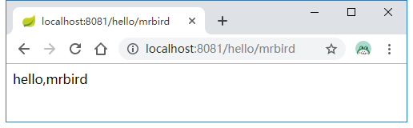
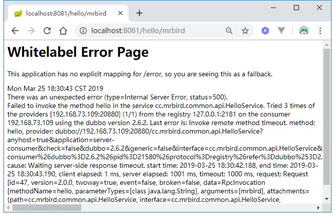
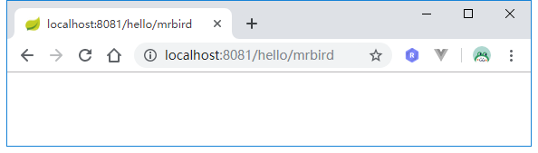
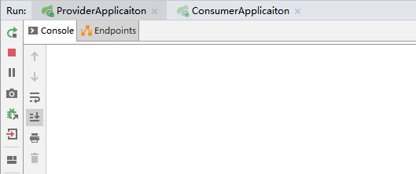
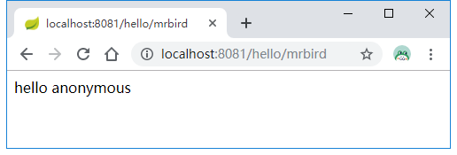

Dubbo的一些自身特性确保了Dubbo的高可用，比如当注册中心宕机后，服务提供者和服务消费者仍能通过本地缓存通讯；注册中心对等集群，任意一台宕掉后，将自动切换到另一台；当有多台服务提供者提供服务时，Dubbo内置了几种负载均衡算法，并且服务提供者是无状态的，任意一台宕掉后，不影响使用；我们还可以通过整合Hystrix来实现服务降级。
注册中心
这里模拟一下当所有服务注册中心宕机后，服务提供者和服务消费者是否能够正常通讯。
在上一节的例子上，启动Zookeeper，然后分别启动server-proivder和server-consumer，启动好后关闭Zookeeper，这时候注册中心是宕机的状态：
访问http://localhost:8081/hello/mrbird看是否可以成功消费服务：

可以看到服务提供者和服务消费者通讯是正常的，因为注册中心负责服务地址的注册与查找，相当于目录服务，服务提供者和消费者只在启动时与注册中心交互，注册中心全部宕机，不影响已运行的提供者和消费者，消费者在本地缓存了提供者列表。
Dubbo直连
使用注册中心来维护服务可以降低后期维护和拓展的复杂度，降低耦合。不过Dubbo也提供了绕过注册中心的方法，即服务消费者不通过注册中心，而是直接取访问服务提供者来获取服务，这种方式也称为Dubbo直连。
我们在服务消费者的@Reference注解上直接指定服务提供者的地址，即可实现Dubbo直连：
1 | (url = "http://127.0.0.1:8080") |
负载均衡
Dubbo提供了四种负载均衡机制：RandomLoadBalance，LeastActiveLoadBalance，ConsistentHashLoadBalance和RoundRobinLoadBalance。
RandomLoadBalance
RandomLoadBalance是基于权重的负载均衡机制。假如现在有一个由三个服务提供者构成的集群，Server1的权重为100，Server2的权重为200，Server3的权重为300，那么当一个服务消费请求发送过来时，有1/6的几率命中Server1，1/3的记录命中Server2，1/2的记录命中Server3。
LeastActiveLoadBalance
LeastActiveLoadBalance俗称最小活跃数负载均衡，假如现在有一个由Server1、Server2和Server3三个服务提供者构成的集群，在上一次请求中，Server1的耗时为100ms，Server2的耗时为200ms，Server3的耗时为300ms，那么当一个新的请求到来时，会命中耗时最少的那个服务，即Server1。
ConsistentHashLoadBalance
详见官方文档介绍：http://dubbo.apache.org/zh-cn/docs/source_code_guide/loadbalance.html。
RoundRobinLoadBalance
RoundRobinLoadBalance是基于权重的轮询负载均衡机制，即服务请求在轮询的同时还得考虑权重。举个例子：
假如现在有一个由三个服务提供者构成的集群，Server1的权重为100，Server2的权重为200，Server3的权重为300，现在有6个服务消费请求依法发送过来，按照轮询机制，第1个请求命中Server1，第2个请求命中Server2，第3个请求命中Server3，到这里三个服务提供者已经轮询完一次，第4个请求本应该从新开始轮询，命中Server1，但是由于Server1的权重为100（占1/6，即6次只会命中一次），所以第4个请求会被分配到Server2。
接着轮询，第5个请求将命中Server3，第6个请求命中Server2。所以这6个请求命中的顺序为123232，这个概率和服务提供者的权重比相匹配。
机制选择
默认情况下，Dubbo采用RandomLoadBalance负载均衡机制。我们可以在服务提供者和服务消费者上指定使用哪种负载均衡：
在客户端的@Reference注解上指定：
1 | (loadbalance = RoundRobinLoadBalance.NAME) |
在服务端的@Server注解上指定：
1 | (interfaceClass = HelloService.class, loadbalance = RoundRobinLoadBalance.NAME) |
权重分配
我们可以在Dubbo提供的@Server注解上指定暴露服务的权重：
1 | (interfaceClass = HelloService.class, weight = 100) |
这时候在Dubbo Admin里可以看到这个服务的权重就为100了：
我们可以可以通过Dubbo Admin来动态调节服务的权重:
集群容错
Dubbo支持多种容错模式：http://dubbo.apache.org/zh-cn/docs/user/demos/fault-tolerent-strategy.html
服务降级
Dubbo默认支持两种降级策略:
mock=force:return+null 表示消费方对该服务的方法调用都直接返回 null 值，不发起远程调用。用来屏蔽不重要服务不可用时对调用方的影响。
还可以改为 mock=fail:return+null 表示消费方对该服务的方法调用在失败后，再返回 null 值，不抛异常。用来容忍不重要服务不稳定时对调用方的影响。
我们可以在Dubbo Admin控制台上来处理降级。
为了模拟错误情况，我们改造服务提供者实现的hello方法：
1 |
|
方法中让线程阻塞了2秒。
接着改造服务消费者，在@Reference注解上配置超时时间：
1 | (timeout = 1000) |
在不进行服务降级的情况下，访问http://localhost:8081/hello/mrbird将看抛出异常:

在Dubbo Admin消费者列表上的屏蔽按钮对应mock=force:return+null策略，即不调用服务，直接返回null，
点击屏蔽后，再次访问http://localhost:8081/hello/mrbird：

服务提供者的控制台也没有任何调用日志:

而容错按钮则对应mock=fail:return+null机制。点击容错按钮，再次访问http://localhost:8081/hello/mrbird：

上述结果证明了在mock=fail:return+null策略下，消费方对该服务的方法调用在失败后，再返回 null 值（之所以会输出多次调用日志，是因为Dubbo的重试机制）。
整合Hystrix
我们可以通过整合Spring-Cloud-Hystrix和Dubbo来拓展服务降级。
在server-provider里引入Hystrix依赖：
1 | <dependency> |
然后再server-provider的入口类上使用@EnableHystrix注解开启Hystrix功能。
接着改造server-provider的HelloServiceImpl：
1 | (interfaceClass = HelloService.classE) |
在hello方法中，我们制造一个空指针异常，通过@HystrixCommand(fallbackMethod = "defaultHello")指定了降级的方法为defaultHello。值得注意的是，降级方法的方法参数和返回类型必须和原方法保持一致，不熟悉的读者可以参考https://mrbird.cc/Spring-Cloud-Hystrix-Circuit-Breaker.html。
改造好后，重启服务提供者和服务消费者，访问http://localhost:8081/hello/mrbird：

可见服务已经成功降级。
源码链接：https://github.com/wuyouzhuguli/SpringAll/tree/master/53.Dubbo-High-Availability